多成中醫主題公園
DuoSuccess TCM Theme Park
1AUHC6wpgF676cEd8uZX6cU8BucGU4KAP7
授權地址 Authorized Address :
23°44'16.03"N, 90°24'06.00"E |
||
Ramna Road |
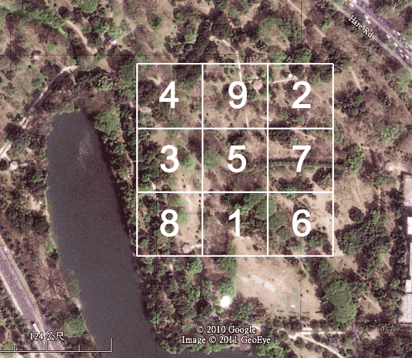 | Hare Road S Captain Munsur Ali Sharani |
Ramna Road |
||
43°51'49.15"N, 79°24'09.76"W |
||
Bayview Hill Child Care Centre |
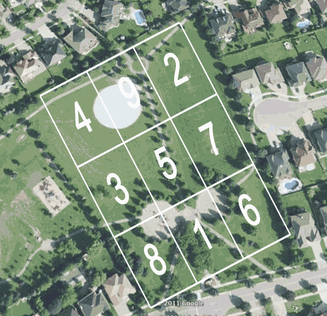 | Ridgley Court |
Boake Trall |
||
22°16'50.89"N, 114°11'18.51"E |
||
告士打道 Gloucester Road |
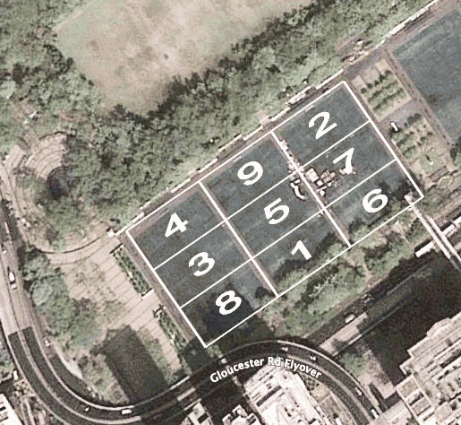 | 興發街 Hing Fat Street |
高士威道（中央圖書館方向） Causeway Road |
||
22°20'21.67"N, 114°08'14.27"E |
||
呈祥道 Ching Cheung Road |
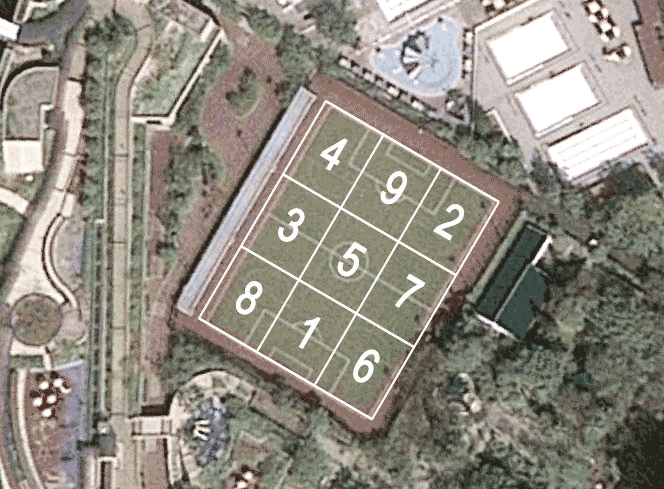 | 荔灣道 Lai Wan Road |
葵涌貨櫃碼頭路 Container Port Road |
||
22°18'04.64"N, 114°10'16.34"E |
||
廣東道 Canton Road |
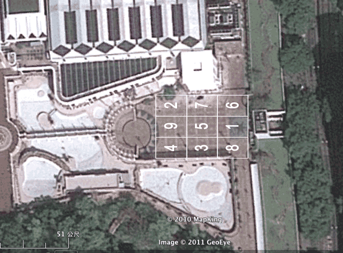 | 彌敦道 Nathan Road |
海防道 Haiphong Road |
||
22°26'25.52"N, 114°01'08.28"E |
||
公園北路 Town Park Rd. N. |
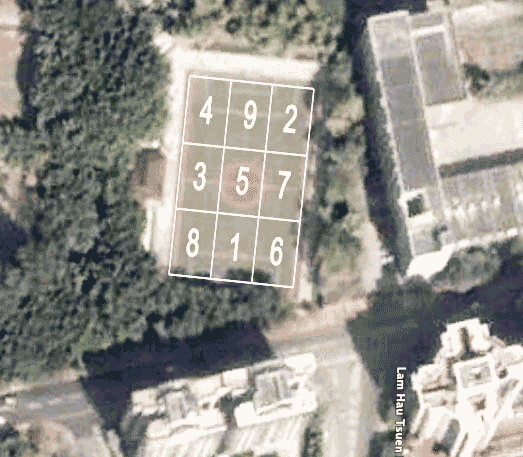 | 公園北路 Town Park Rd. N. |
公園南路 Town Park Rd. South （藝典居） |
||
22°27'27.68"N, 114°00'11.56"E |
||
天榮路 Tin Wing Road |
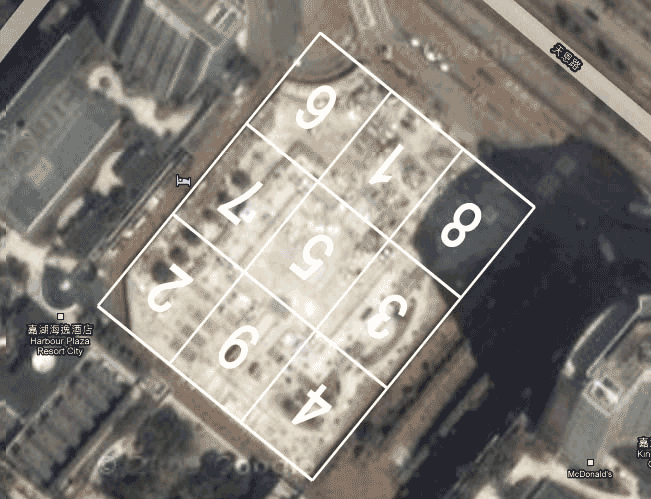 | 天恩路（嘉湖山莊出入口） Tin Yan Road |
天瑞路 Tin Shui Road |
||
22°27'14.73"N, 114°10'09.12"E |
||
安祥路 On Cheung Road |
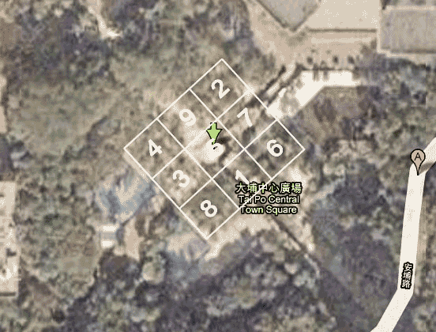 | 安埔路 On Po Road |
安埔路 On Po Road |
||
22°25'38.98"N, 114°13'50.22"E |
||
| 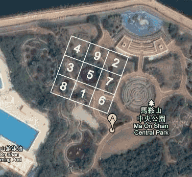 | 歷奇迷宮 Adventure Maze |
|
中央草坪 Central Lawn |
||
22°22'48.29"N, 114°11'25.49"E |
||
沙田婚姻登記處 Sha Tin Marriage Registry |
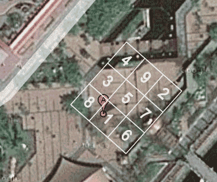 | 城門河 Shing Mun River |
露天劇場 Amphitheatre |
||
22°19'07.95"N, 114°15'26.55"E |
||
寶康路 Po Hong Road |
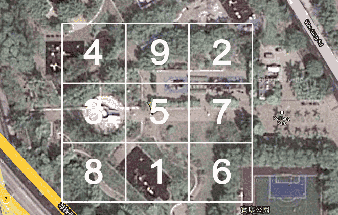 | 運隆路 Wan Lung Road |
運隆路 Wan Lung Road |
||
22°20'16.23"N, 114°11'26.69"E |
||
鳳舞街（體育館） Fung Mo St. (Sports Centre) |
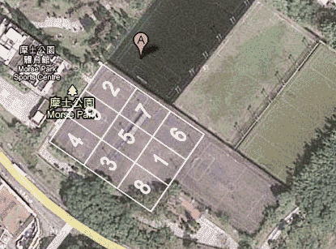 | 標準草地足球場 Standard Grass Pitch |
鳳舞街 Fung Mo Street |
||
22°22'02.40"N, 114°06'47.77"E |
||
弧形涼亭 Curved pavilion |
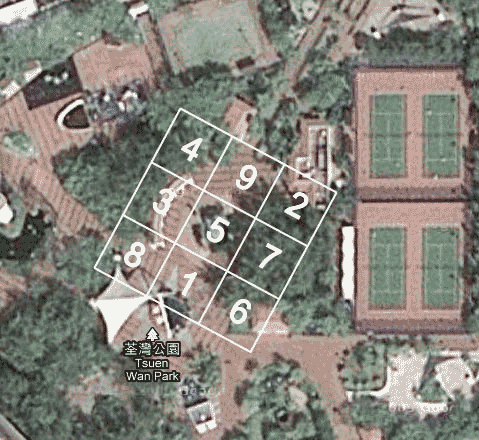 | 弧形涼亭 Curved pavilion |
露天劇場 Amphitheatre |
||
22°23'26.80"N, 113°58'21.31"E |
||
屯門河 Tuen Mun River Channel |
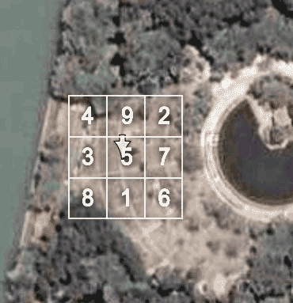 | 人工瀑布 Artificial waterfall |
爬蟲館 Reptile House |
||
22°22'57.50"N, 114°16'28.93"E |
||
惠民路 Wai Man Road |
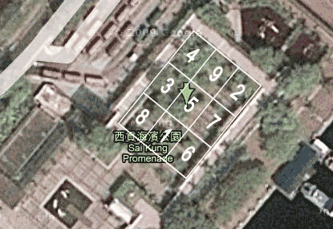 | 海邊（西餐廳） Beach (restaurant) |
西貢 惠民路休憩花園 Wai Man Road Rest Garden, Sai Kung |
||
22°17'27.56"N, 114°12'38.20"E |
||
海澤街 Hoi Chak Street |
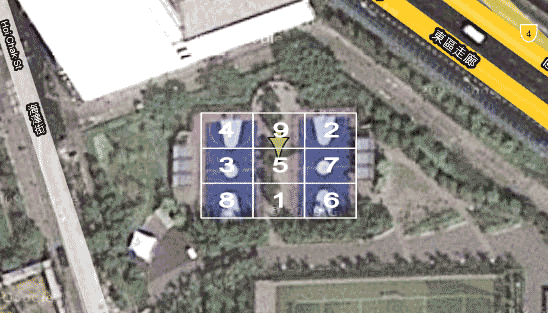 | 東區走廊 Island Eastern Corridor |
人造草地7人足球場 7 artificial turf soccer pitch |
||
3°9'22.00"N, 101°42'55.48"E |
||
Jln P Ramlee |
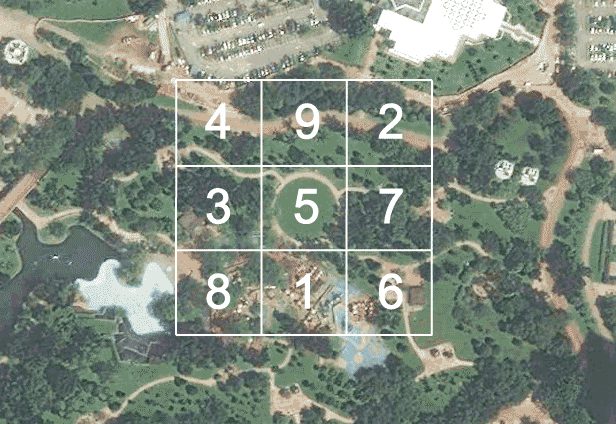 | Jln Binjai |
Jln Pinang / Jln Kia Peng |
||
5°25'15.81"N 100°20'32.01"E |
||
Jalan Padang Kota Lama |
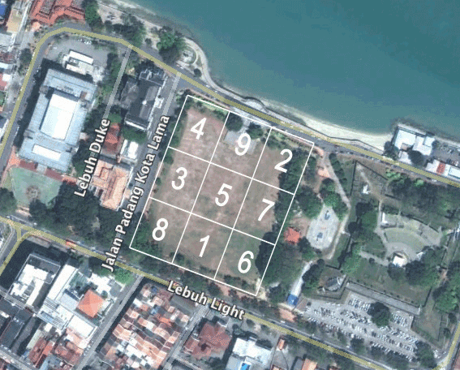 | 康華麗堡 Fort Cornwallis |
Lebuh Light |
||
50°26'44.39"N, 30°32'28.00"E |
||
Mykhaila Hrushevs'koho St. |
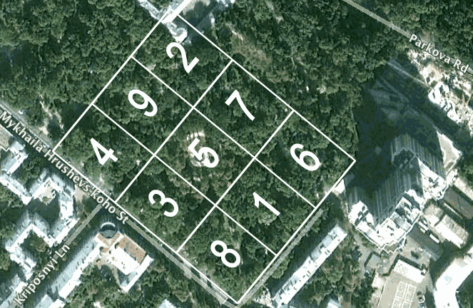 | Crown. Built in 2007 |
Mykhaila Hrushevs'koho St. |
||
Chinese - 入園須知
中醫健康旅遊養生。生命和健康的遠古文明
傳說中的健康幸福快樂園
園內，設有九宮八卦陣。傳說中，此陣為伏羲以河圖洛書八卦玄奧秘法所設，逗留感受，以期自然健康。這美麗的故事世紀流傳，心身健康是永恒的主題，千百年來多少人夢寐以求。人們在這裡尋找到健康的精神和真諦，這就足夠了，因為健康是人類最根本的需求，有了她幸福就體現了出來。誰不追求幸福呢？
這裡演繹的是具有中國特色和內涵的傳統文明，這裡蘊藏著許多未知的中華文化玄機和奧秘，這裡集大成璀璨和撲朔迷離的五千年傳統以方便你感悟人生哲理，其實這複雜而又簡單的答案就是──道法自然，大道無形。通俗地說，如同高樓蔽月，賞月就須挪個方位，這與時和空相對而言（相對論）。